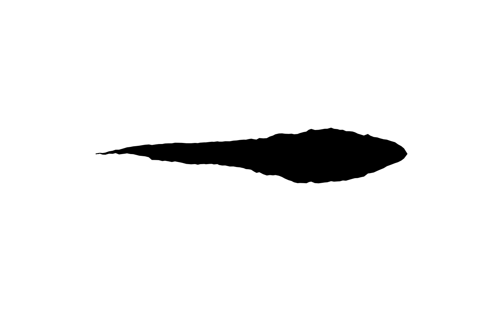
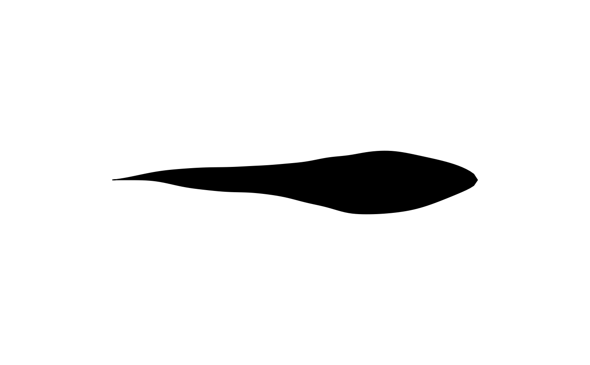

noise_bridge bundles the settings needed to generate a smoothed
Brownian bridge (via the internal smooth_bridge() helper): how many
local-averaging smooth-ing passes to apply, and which seed to draw
from. Unlike noise_field (sampled at arbitrary (x, y) positions in
the plane), a Brownian bridge has no spatial position to sample at –
noise_sample()'s method for noise_bridge instead takes a point
count n and a scale, returning a length-n displacement vector.
This is the distortion behind shape_twist()'s wandering path, split
out into its own class for the same reason noise_field was: so the
distortion is a first-class, swappable object rather than bare
constructor arguments, and so a future curve_twist() (an open,
unfilled wandering path) can reuse it without duplicating
shape_twist()'s path logic.
See also
Other noise helpers:
noise_field(),
noise_sample()
Examples
noise_bridge(smooth = 5L, seed = 4821L)
#> <sketchpad::noise_bridge>
#> @ smooth: int 5
#> @ seed : int 4821
# more smoothing passes give a gentler bridge; embedding it in
# shape_twist()'s path_distortion makes the effect easy to see
draw(shape_twist(
x = 0, y = 0, xend = 1, yend = 0, width = 0.2,
path_distortion = noise_bridge(smooth = 0L, seed = 7734L)
))

draw(shape_twist(
x = 0, y = 0, xend = 1, yend = 0, width = 0.2,
path_distortion = noise_bridge(smooth = 20L, seed = 7734L)
))
